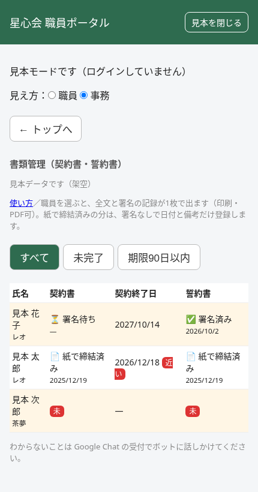
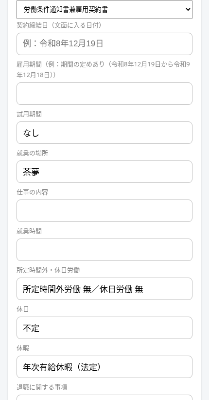
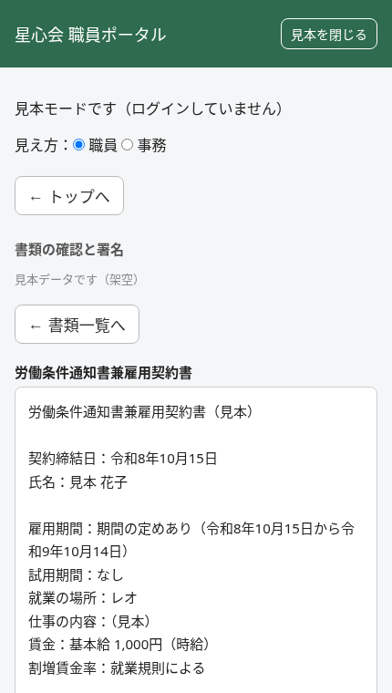
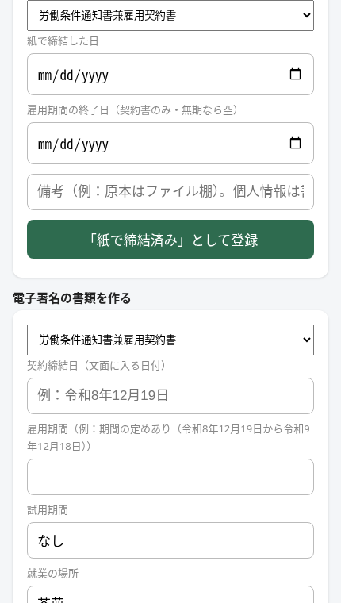
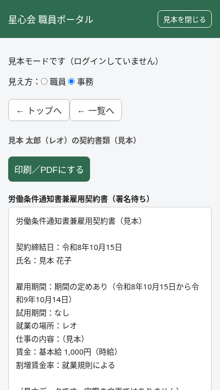

やることは2つ
① 書類を出す ② 運営指導で見せる紙で結んだ人は、入力しなくて大丈夫です。紙は保管するだけです（任意の登録）。
画面の絵は見本（架空の名前）です。
はじめに：書類管理を開く
1ポータルにログインします。
2トップの下の「事務」の中の書類管理（契約書・誓約書）を押します。

3名前が並んだ表が出ます。署名待ちはまだ。署名済みは完了。赤い未は書類がありません。
画面が出ないとき
「事務の方だけが見られます」と出たら、事務のアカウントではありません。ログインし直してください。
① 書類を出す（署名をお願いする）
1一覧で、署名してほしい人の名前を押します。
2下へ進み、電子署名の書類を作るを見つけます。
3上の選ぶ欄で、契約書か誓約書を選びます。

4契約締結日（文面に入る日付）を書きます。例：令和8年12月19日
5契約書のときは、雇用期間と賃金（基本給・単位・交通費）を書きます。ほかは最初から入っています。
6下書きを作って発行（本人に通知）を押します。出てきた確認で「OK」。
7これで本人に「署名待ち」が出ます。本人に「ポータルのトップを見てね」と声をかけてください。
項目の入れ方（くわしく）
- 割増賃金率は「就業規則による」と入っています。そのままでOKです。
- 雇用期間の例：期間の定めあり（令和8年12月19日から令和9年12月18日）
- 期間がある人は、日付の欄（開始日・終了日）も入れます。終了日が近いと、一覧に「近い」と出ます。
- 誓約書は、日付だけでOKです。
- マイナンバー・口座・生年月日・住所は書きません（欄もありません）。
職員が署名するときの流れ（本人に伝える言葉）
- トップの書類の確認と署名を押す。
- 内容を確認して署名するを押す。
- 最後まで読んで、チェックを入れる。
- 氏名の欄に、登録されている名前を書く。
- 同意して署名するを押す。

署名できないとき
- 「氏名が一致しません」→ 漢字が違うかもしれません（斎・齋・齊など）。登録の名前と同じ字で書いてもらいます。
- 登録の名前が違っていたら、システム担当に連絡してください。
- 「署名できる書類がありません」→ すでに署名したか、まだ出していません。一覧で状態を見てください。
間違えて出したとき
出したあとは直せません。システム担当に連絡してください。新しく作り直します。
契約を更新するとき（期間が終わるとき）
- 古い契約書は直しません。上の①と同じ手順で、新しい契約書を出します。
- 賃金などは自動では写りません。古い契約を見ながら入れてください。
- 本人が署名すると、古いほうは「更新前」になって履歴に残ります。
（任意）紙で済みの人の登録
今は入力しなくてよい。必要なときだけ開く
紙で結んだ人は、今は入力しなくてよいです。紙は保管するだけで大丈夫です。ポータルの一覧に「紙で済み」と出したいときだけ、次の手順で登録できます（任意）。
1一覧で、その人の名前を押します。
2下へ進み、紙で締結済みを登録（署名なし）を見つけます。

3契約書か誓約書かを選びます。
4紙で締結した日に、紙に書いてある日を入れます。
5契約書で期間がある人は、雇用期間の終了日も入れます。
6備考に、紙のある場所を書きます。例：事務所の棚。
7「紙で締結済み」として登録を押します。一覧が「📄 紙で締結済み」になります。
くわしく
- 契約書と誓約書の両方あるなら、種類を変えてもう1回登録します。
- 日付を間違えたら、正しい日付でもう1回登録します（古いほうは履歴に残ります）。
- 備考に個人情報は書きません。
② 運営指導で見せる
1書類管理を開き、見せたい人の名前を押します。
2契約書と誓約書の全文と、署名の記録が1枚で出ます。

3印刷／PDFにするを押します。
4プリンターを選べば紙に、「PDFに保存」を選べばPDFになります。
画面に出る記録の見方
- 署名した人の名前と日時が出ます。
- 「再計算：✅ 一致」は、署名のあとに書き換えられていない印です。
- 紙で済みの分は「📄 紙で締結済み」と、日付・備考が出ます。原本は備考の場所から出します。
こまったとき
事務のタイルが出ない
事務のアカウントでログインしていません。
「未入力の項目があります」と出る
空の欄があります。入れ直してください（備考は空でOK）。
「職員の氏名が未登録です」と出る
システム担当に連絡してください。
署名したのに「署名待ち」のまま
画面を読み込み直してください。変わらなければ連絡してください。
練習したい
ログイン画面の「見本を見る」で、架空のデータで試せます（保存されません）。
わからないことは、Google Chat の受付でボットに話しかけてください。
書類管理を開く ポータルへもどる